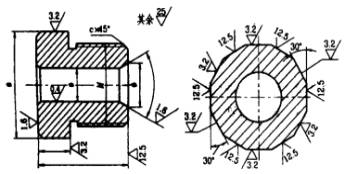
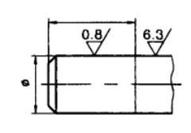
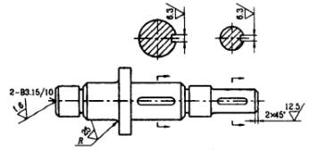
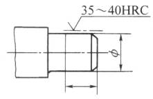
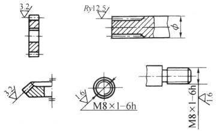
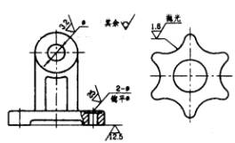
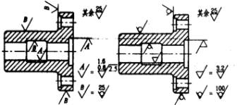
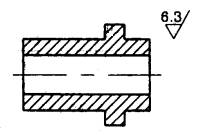

|
表面粗糙度符号、代号一般注在可见轮廓线、尺寸界线、引出线或它们的延长线上。符号的尖端必须从材料外指向表面  |
同一表面有不同的表面粗糙度要求时，须用细实线画出其分界线，并注出相应的表面粗糙度的代号和尺寸  |
|
中心孔的工作表面、键槽工作面、倒角、圆角的表面粗糙度代号，可以简化标注  |
需要表示局部热处理或局部镀涂时，应用粗点划线画出其范周并标注相应的尺寸，也可将其要求注写在表面粗糙度符号长边的横线上  |
|
齿轮、渐开线花键、螺纹等工作表面没有画出齿（牙）形时的标注方法  |
零件连续表面及重复要素（孔、槽、齿……等）的表面和用细实线连接不连续的同一表面，其表面粗糙度符号、代号只标注一次。对使用最多的一种表面粗糙度符号、代号可统一标注在图样的右角上，并加注“其余”  |
|
为了简化标注方法，或标注位置受到限制时，可以标注简化代号（也可采用省略注法），但必须在标题栏附近说明这些简化代号的意义  |
当零件所有表面具有相伺的表面粗糙度要求时，其符号、代号可在图样的右上角统一标注  |